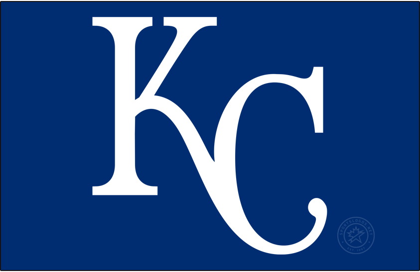

The Royals were founded in 1969 as an expansion team. They first played their games at Municipal Stadium from 1969 to 1972. Since 1973, the Royals have played all of their home games at Kauffman Stadium. The Royals have played in four World Series since becoming a team. They won in 1985 and 2015. They lost in 1980 and 2014. They haven't made the playoffs since their 2015 World Series championship. Despite winning the AL pennant two consecutive years (2014 and 2015), they have missed the playoffs 34 of the past 36 years, which is the worst in professional baseball.
